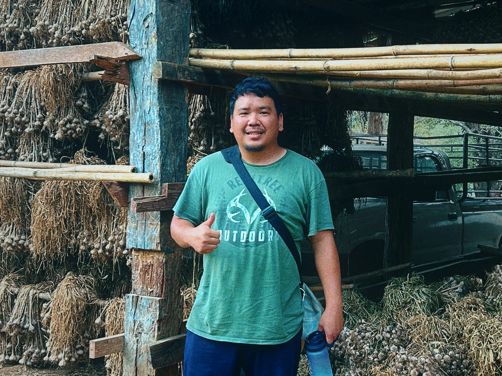

Kingdom Journey is a calling to walk with God through every chapter of life, every city and village, every nation and people group. The mission never changes.
Walking alongside students and young people, pouring into their lives with the Word of God, building faith that goes beyond the classroom.
Using hands-on construction work as a tool for discipleship — teaching life skills, building character, and sharing Jesus through real work and relationship.
Eight years of overseas mission experience, with a vision to reach every unreached people group. The nations are always on our heart.
This is the beginning of something I've carried in my heart for a long time. Kingdom Journey is now a place where you can follow along as God leads me through each chapter — from construction discipleship in San Antonio, to wherever He calls next. Thank you for being part of this journey.
Working with inner-city students on the west side — teaching construction skills, life skills, and the Gospel side by side.
Weekly Bible study and one-on-one mentorship with students — many of whom are encountering Jesus for the first time.
Continuing the call to unreached nations — the next chapter of Kingdom Journey is taking shape. Pray with us.
Your support sends students into the field and builds more than structures — it builds lives, faith, and the Kingdom of God.
From Ho Chi Minh City to America, from hopelessness to a calling that spans the nations — this is Kingdom Journey.
I grew up in Ho Chi Minh City, Vietnam — raised not by my parents, but by my grandparents. My father left before I was born. My mother had to travel and work constantly just to provide for our family. For most of my childhood, I carried a weight I couldn't name: deep anger, jealousy, and a feeling of being unworthy.
I never saw a Bible. I never heard the name of Jesus. We lived according to Buddhism and karma, and I believed my suffering was punishment from a past life. At one of my lowest points, I even considered taking my own life — convinced that maybe a next life would be better than this one.
But something — someone — stopped me every time.
At twenty-one, I moved to America. I thought a new country would mean a new life — the American dream, freedom, a fresh start. But the anger came with me. The emptiness was still there. I had no hope, no dream, no vision for my future.
One day, I was so overwhelmed with anger that I said something cruel to my mother and made her cry. That moment broke something open in me. I had to ask: What is the purpose of my life? Is this all I'm meant to do?
Then I met a group of Christians in college. They kept showing up, kept loving me, kept inviting me in. Eventually I asked them: "Why do you care about me? My family doesn't even love me. Why do you?" Their answer changed everything.
That was the first time I experienced the love of God through another person.
A year or two later, my car broke down on a dark highway late at night. I was alone, waiting for help, and I prayed the most honest prayer of my life:
In that moment, God gave me two visions. One showed my life before Jesus — full of darkness, brokenness, and sorrow. The other showed my life after Jesus — full of hope, joy, and dreams. Then God asked me a simple question: Which life do you want to live?
I chose hope. I chose Jesus. I accepted Him that night, got baptized, and started reading the Bible. For the first time in my life, things became clear.
As I studied Scripture in a small group, I began to understand God's heart for the lost — for people like me who had never heard the Gospel. I took mission trips to different nations and saw something that broke my heart: millions of people have no access to the Bible. Millions have never heard the name of Jesus.
Then I read John 1:12 — that to all who believed and received Him, He gave the right to become children of God. That verse became the foundation of everything.
I spent five years leading college ministry at Texas A&M Kingsville — running Bible studies, discipling students, and leading mission trips. Over eight years, I took overseas mission trips annually, spending 2–4 weeks each year in different nations alongside missionaries. The burden for unreached people groups only grew stronger.
In 2025, I sensed God calling me into a new season. I had known Agora Ministries for nearly a decade — I'd taken mission trips with them, built friendships, and seen their heart for the city. When I prayed, their name kept coming to mind.
I made the call. I got the interview. I joined the team.
When I arrived, I asked God: What is my purpose here? The answer was clear: be a helper for this season. So I asked the director: "What do you need most right now?" He told me about the students on the west side of San Antonio — young people with over an 80% high school dropout rate, growing up in poverty, dealing with family trauma from addiction and loss. Students who had never had anyone pour into them.
That's where construction discipleship comes in. We don't just teach building skills — we teach students how to live, how to lead, and who Jesus is. Many of our students are Middle Eastern youth who are encountering the Gospel for the first time. We show them what it looks like to follow Jesus in real life, through real work, in real relationship.
What I'm doing with Agora is one chapter. My calling is bigger. My vision is to walk with Jesus across every nation, every city, every village, every people group — to build His kingdom through every conversation, every contact, every student, every dream He places on my heart.
I don't know all the details of where God will lead me next. I may move to a different country. I may work with different organizations. But the mission stays the same.
This is Kingdom Journey. And you're invited to walk with us.
Every project is a chapter in the same story — making disciples, building lives, and advancing the Kingdom of God wherever He leads.
Partnering with Agora Ministries in San Antonio, TX, we work with inner-city students on the west side who face significant barriers — poverty, family trauma, and a high dropout rate. Through hands-on construction training, we create a pathway for these students to learn life skills, develop character, and encounter Jesus in a real way.
This is discipleship with dirt on your hands — and it's changing lives.
Weekly Bible study and one-on-one mentorship with students in our construction program. Many are Middle Eastern youth encountering the Gospel for the first time. We walk with them through Scripture, answer their hard questions, and show them what it looks like to follow Jesus in everyday life.
For eight years, I've taken annual mission trips overseas — spending 2–4 weeks each year in different nations alongside missionaries. The call to unreached people groups has never left my heart. The next major chapter of Kingdom Journey is taking shape — through prayer, preparation, and trust in God's timing.
Pray with us that God makes the path clear.
Every missionary needs a team behind them. We're building a network of people who pray, give, and stay connected to what God is doing through Kingdom Journey. This website is the beginning of that — a place where our community can follow the journey and be part of the mission.
You're already part of this by being here.
Your prayers and support directly fuel the work in San Antonio and beyond.
Every month, a new chapter. Follow along as God leads Kingdom Journey through each season — stories from construction sites, from Bible studies, from mission trips, and from life on the journey.
This is the beginning of something I've carried in my heart for a long time. Kingdom Journey is now a place where you can follow along as God leads me through each chapter. From construction discipleship in San Antonio with Agora Ministries, to wherever He calls next — I want you on this journey with me. Thank you for being here from the very start.
An posts monthly updates from the field. Subscribe below so you never miss one.
Kingdom Journey runs on prayer, relationship, and the generosity of people who believe in what God is doing. There are three ways you can partner with us.
Your financial gift supports An's ministry — covering travel, discipleship materials, and the day-to-day work of reaching students and nations.
Prayer is the foundation of everything. Sign up for our monthly updates and pray for the students, mission trips, and doors God is opening.
Share Kingdom Journey with your church, your small group, or anyone who has a heart for missions and discipleship. Every connection matters.
Kingdom Journey is supported through the Assemblies of God giving platform — a secure, trusted system for ministry donations.
All gifts are tax-deductible through the Assemblies of God.
— An Nguyen, Kingdom Journey
Whether you want to pray together, partner with Kingdom Journey, ask questions, or just say hello — I'd love to hear from you.
I personally read every message. Don't hesitate to reach out — whether you're a supporter, a church leader, or someone who just found this page and wants to know more.